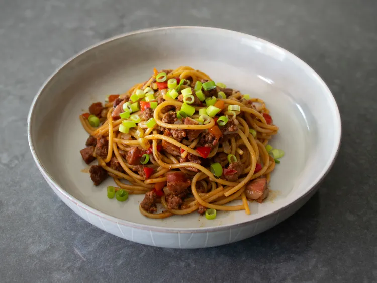

One-Pan Dirty Spaghetti

Description
Spagetti that has more flavor and vegetables
Ingredients
- 2 tablespoons olive oil
- 8 ounces ground beef
- 1 medium yellow onion, diced
- 1 1/2 cups diced bell pepper
- 1/2 cup diced celery
- 4 ounces andouille sausage, diced small
- 1/2 teaspoon onion powder
- 1/2 teaspoon garlic powder
- 1 teaspoon paprika
- 1 teaspoon ground cumin
- 1/4 teaspoon dried oregano
- 1/4 teaspoon dried thyme
- 1 1/2 teaspoons kosher salt
- 1/4 teaspoon cayenne pepper
- 1/2 teaspoon freshly ground black pepper
- 2 cups beef broth
- 8 ounces spaghetti
- 1 teaspoon Worcestershire sauce
- 1/2 cup sliced green onions, for garnish
Steps
-
Add oil to a deep skillet with a tight fitting lid and set over medium-high heat. Add ground beef, and cook, stirring, for 3 or 4 minutes, breaking the meat up into small crumbles while doing so.
-
Once ground beef is browned, add onion, bell peppers, celery, and andouille sausage, and cook, stirring, for 2 more minutes. Season with onion powder, garlic powder, paprika, cumin, oregano, thyme, cayenne, black pepper, and salt, and cook, stirring, for 1 to 2 minutes more. Pour in broth and bring to a simmer.
-
Break spaghetti in half and add to the pan. Distribute spaghetti as evenly as possible and cover the pan tightly. Cook on medium-high for 2 minutes. Uncover and give everything a stir. Repeat this process of uncovering, stirring, and covering every 2 minutes or so, until pasta is cooked to your desired doneness.
-
Turn off the heat and drizzle in Worcestershire sauce, plus another pinch of salt if needed. Stir to combine, and serve in bowls topped with green onions.
Home